Simulations¶
This notebook introduces the simulations used in this project.
It also creates some example simulation figures.
%matplotlib inline
import numpy as np
import matplotlib.pyplot as plt
from fooof import FOOOF
from fooof.sim import gen_power_spectrum
from neurodsp.sim import sim_powerlaw, sim_synaptic_current, sim_combined
from neurodsp.utils import create_times, set_random_seed
from neurodsp.spectral import compute_spectrum, rotate_powerlaw
from neurodsp.plts import plot_time_series, plot_power_spectra
# Import custom code
import sys; from pathlib import Path
sys.path.append(str(Path('..').resolve()))
from apm.core.db import APMDB
Settings¶
# Set random seed
set_random_seed(111)
# Simulation Settings
n_seconds = 2
fs = 500
default_exp = -1.5
default_freq = 10
comps_osc = {'sim_powerlaw' : {'exponent' : default_exp},
'sim_oscillation' : {'freq' : default_freq}}
comps_burst = {'sim_powerlaw' : {'exponent' : default_exp},
'sim_bursty_oscillation' : {'freq' : default_freq}}
# Create a times vector for time series
times = create_times(n_seconds, fs)
# Plot settings
labels = {'xlabel' : '', 'ylabel' : ''}
tskwargs = {**labels, 'xlim' : [0, times[-1]]}
# Settings for saving figures
SAVE_FIG = True
EXT = '.pdf'
FP = APMDB().figs_path + '/sims/'
# Set plot style
import seaborn as sns
sns.set_context('talk')
Time Series Simulations¶
Time series are simulated using NeuroDSP.
Powerlaw Signal¶
sig_pow = sim_powerlaw(n_seconds, fs, default_exp, f_range=(1, None))
plot_time_series(times, sig_pow, **tskwargs,
save_fig=SAVE_FIG, file_name='ts_powerlaw' + EXT, file_path=FP)
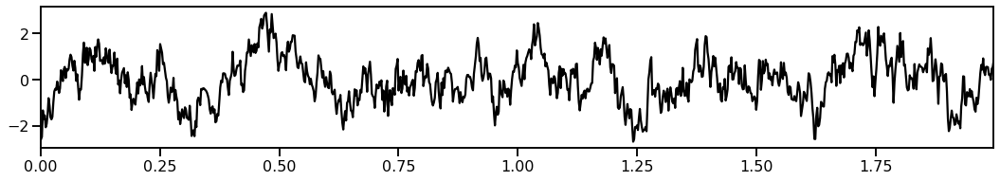
Powerlaw Signal with a Knee¶
sig_kn = sim_synaptic_current(n_seconds, fs)
plot_time_series(times, sig_kn, **tskwargs,
save_fig=SAVE_FIG, file_name='ts_knee' + EXT, file_path=FP)
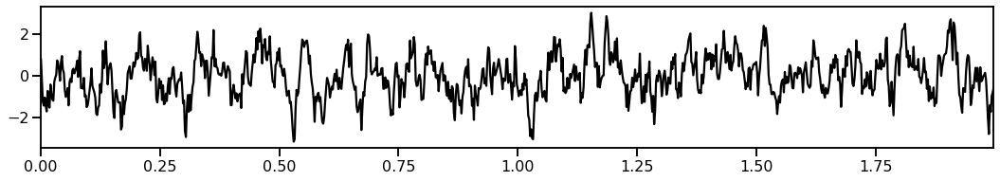
Continuous Oscillation¶
sig_osc = sim_combined(n_seconds, fs, comps_osc)
plot_time_series(times, sig_osc, **tskwargs,
save_fig=SAVE_FIG, file_name='ts_comb' + EXT, file_path=FP)
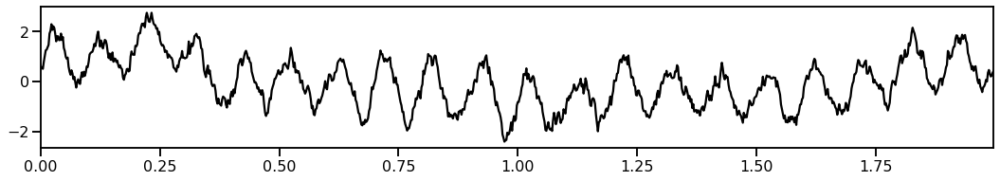
Bursty Oscillation¶
sig_bu = sim_combined(n_seconds, fs, comps_burst)
plot_time_series(times, sig_bu, **tskwargs,
save_fig=SAVE_FIG, file_name='ts_burst' + EXT, file_path=FP)
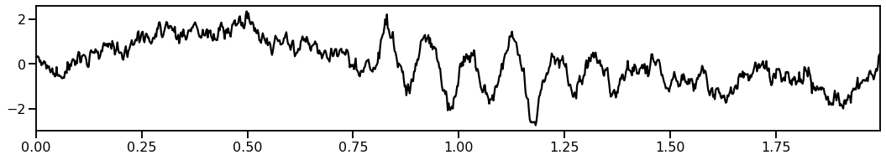
Power Spectrum of Simulated Time Series¶
# Calculate the power spectrum of a simulated time series
sig_freqs, sig_powers = compute_spectrum(sig_osc, fs, nperseg=250)
# Plot the power spectrum of the simulated time series
plot_power_spectra(sig_freqs, sig_powers)
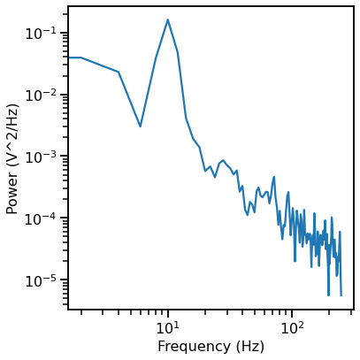
Power Spectrum Simulations¶
Power spectra are simulated using FOOOF.
def custom_psd_style(ax, **kwargs):
"""Define custom styling for the PSD plots."""
ax.set_xticks([], minor=True)
ax.set_yticks([], minor=True)
ax.axes.get_xaxis().set_ticks([])
ax.axes.get_yaxis().set_ticks([])
plt.tight_layout()
Single Peak & Fixed Mode¶
freqs, powers = gen_power_spectrum([3, 40], [1, 1], [10, 0.3, 1], nlv=0.025)
plot_power_spectra(freqs, powers, lw=5, ylabel='Power', custom_styler=custom_psd_style,
save_fig=SAVE_FIG, file_name='psd_fixed' + EXT, file_path=FP)
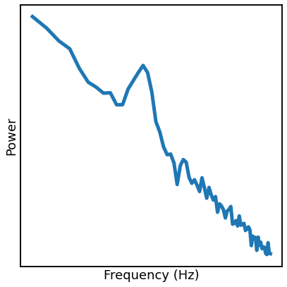
Multi-Peak & Knee Mode¶
freqs, powers = gen_power_spectrum([1, 75], [0, 400, 1], [[5, 0.025, 1], [30, 0.02, 4]], nlv=0.001)
plot_power_spectra(freqs, powers, lw=5, custom_styler=custom_psd_style,
save_fig=SAVE_FIG, file_name='psd_knee' + EXT, file_path=FP)
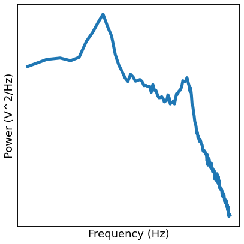
FOOOF Demo¶
FOOOF is a tool for parameterizing neural power spectra.
Here we will briefly demonstrate applying FOOOF to an example spectrum.
# Initialize a FOOOF model
fm = FOOOF(peak_width_limits=[1, 8], min_peak_height=0.1, verbose=False)
# Fit and plot the FOOOF model
fm.fit(sig_freqs, sig_powers, [1, 100])
fm.plot(plt_log=True)
# Aesthetic Tweaks
for line in plt.gca().get_lines():
line.set_linewidth(3.5)
if SAVE_FIG: plt.savefig(FP + 'FOOOF_example' + EXT)

# Check the model fit values
fm.print_results()
==================================================================================================
FOOOF - POWER SPECTRUM MODEL
The model was run on the frequency range 2 - 100 Hz
Frequency Resolution is 2.00 Hz
Aperiodic Parameters (offset, exponent):
-0.8379, 1.6930
3 peaks were found:
CF: 10.52, PW: 1.792, BW: 3.87
CF: 70.43, PW: 0.587, BW: 8.00
CF: 93.05, PW: 0.615, BW: 4.67
Goodness of fit metrics:
R^2 of model fit is 0.9559
Error of the fit is 0.1406
==================================================================================================
Simulating Power Law Signals through Spectral Rotation¶
The aperiodic components of the above time series simulations are created by spectrally rotating white noise.
This section demonstrates how those simulations work.
# Simulate a white noise signal
sig = sim_powerlaw(n_seconds, fs, exponent=0)
plot_time_series(times, sig, **tskwargs,
save_fig=SAVE_FIG, file_name='rot_ts_pre' + EXT, file_path=FP)
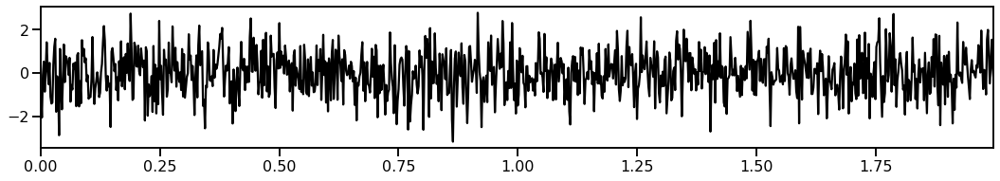
# Compute the power spectrum of the signal
freqs, pows = compute_spectrum(sig, fs, nperseg=250, noverlap=100)
# Plot the power spectrum of the white noise signal
plot_power_spectra(freqs, pows, **labels, ylim=[0.0001, 0.1],
save_fig=SAVE_FIG, file_name='rot_psd_pre' + EXT, file_path=FP)
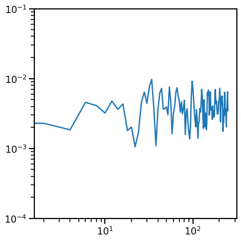
# Rotate the spectrum to desired aperiodic exponent
pows_rot = rotate_powerlaw(freqs, pows, 1, f_rotation=100)
# Plot the power spectrum of the rotated signal
plot_power_spectra(freqs, pows_rot, **labels, ylim=[0.0001, 0.1],
save_fig=SAVE_FIG, file_name='rot_psd_post' + EXT, file_path=FP)
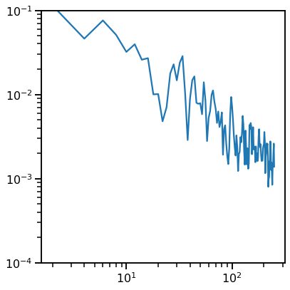
# Get the rotated signal, back in the time domain
# Note: this step directly uses the NDSP function, which rotates a new signal behind the scenes
sig = sim_powerlaw(n_seconds, fs, exponent=-1)
# Plot the time series of the rotated signal, with the desired aperiodic exponent
plot_time_series(times, sig, **tskwargs,
save_fig=SAVE_FIG, file_name='rot_ts_post' + EXT, file_path=FP)
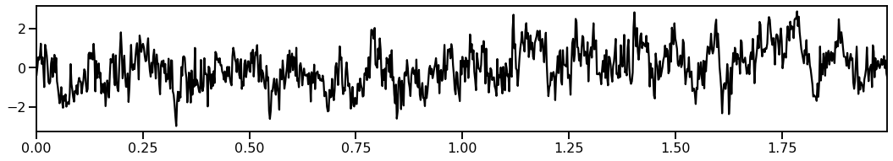